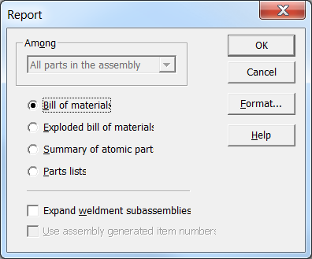

Solid Edge 2019 SDK
Command Line Arguments for Report.exe
After installing Solid Edge on your machine, "Report.exe" can be found in "<installation folder>\Program" folder. This Report.exe is modified in ST9 to accept command line arguments like file name, report type, output file name and Expand Weldments option.
Interactively, user can generate reports using "Reports" option which is available when a user right clicks on an assembly file in windows explorer. Below dialogue box is shown when a user hits "Report" command.

Now user can generate a report using command line arguments. Detailed description of various arguments required for Report.exe are given below.
1. Assembly File Name - First argument is assembly file name. User need to pass full assembly file name of which report is to be generated. e.g- Report.exe D:\Training\carrier.asm. Error log is generated, if user specified assembly path is invalid.
2. Report Type - Second argument is report type, User need to pass report type of which report to be generated. Following reports are supported. Error log is generated if the Report Type specified is incorrect.
| Sr. No | Report Type | Description |
| 1. | ASM_BOM | This type is to get bill of material of supplied file. |
| 2. | ASM_EXPLODED_BOM | This type is to get exploded bill of material of supplied file. |
| 3. | ASM_ATOMIC_PARTS | This type is to get summary of atomic parts of supplied file. |
| 4. | ASM_PARTS_LIST | This type is to get part list of supplied file. |
3. Output File - Third argument is output file name, User need to pass output file name to be generated. Error log is generated If specified Output file type/path is incorrect.
e.g :-For Text file /o=C:\temp\report.txt.
e.g :- For Rich text file /o=c:\temp\report.rtf.
4. Expand Weldments option - Fourth argument is expand weldments option. If this option is FALSE weldment present in assembly document is consider as single part. If option is TRUE then weldment consider as a different components. If Expand weldments option is not specified then output file is generated assuming default option "FALSE".
5. Error Log Option - This is the last argument and is optional. Unless specified this SEReportError.log file is created at temp folder, and user want this file on specific location then pass this ‘/l=’ log file path to create the log file.
Sample example to pass command line arguments is given below
Report.exe D:\Training\carrier.asm /t=ASM_BOM /o=C:\Temp\OutputReport.txt /w=TRUE /l= C:\ErrorLog.log
This format is fixed only ‘/l=’argument is optional.